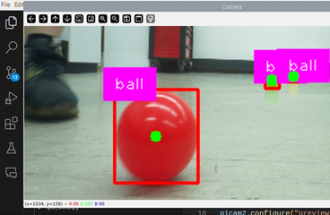

← Selected work
Autonomous robotics / 2023 – 2024
From seeing a target to picking it up
A mobile robot combining vision, motion control, and a gripper for autonomous harvesting.
- Context
- Engineering project · TH Köln
- Period
- September 2023 – August 2024
- My work
- Control · Computer vision · Mechanical prototyping
The idea
The goal was a robot that could detect, approach, pick, and store targets autonomously. The prototype combined a Lynxmotion rover, a Joy-It robotic arm, and a vision system, with plastic balls standing in for apples.
My contribution
- Programmed rover and arm motion on Arduino and Raspberry Pi, using inverse kinematics and PID control.
- Implemented YOLO-based computer vision in native PyTorch format with OpenCV image processing.
- Compared computer vision with a time-of-flight-based scanning approach.
- Designed components in Fusion 360, used FEM to assess designs, and produced prototypes with FDM and resin 3D printing.
An end-to-end robotics prototype
The work connected object detection, motion control, electronics, and mechanical design in a single autonomous harvesting prototype. Comparing sensing approaches also made evaluation a central part of the engineering process.

